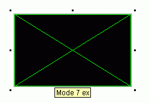
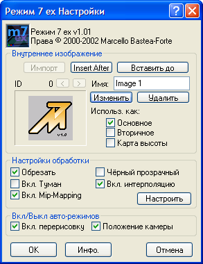
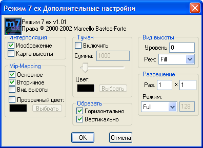

|
Mode 7 Ex Ссылка API: Окно настройки и настройки объекта
Двойной клик на объект Mode 7 Ex в редакторе сцены (как показано слева) вызовет главное диалоговое окно настройки.
Настройки Mode 7 Ex
После того, как откроется диалоговое окно, Вам следует знать что есть несколько разделов для настройки объекта Mode 7 Ex.
(Примечание: по умолчанию экран опций, скорее всего будет отличаться от экрана слева.)
Внутреннее изображение(Internal Images)
Внутренние изображения позволяют хранить все изображения для основной поверхности, вторичной поверхности и карты высоты. Вы можете хранить до 200 различных изображений в каждом объекте Mode 7 Ex. Несколько изображений могут быть использованы для создания анимации, различных уровней и т. д.
- Вставить после — создаёт новое внутреннее изображение непосредственно после текущего выбранного изображения. Затем открывает редактор изображений для нового изображения
- Вставить до — создаёт новое внутреннее изображение на месте текущего изображения, перемещая текущее изображение и все изображения после него. Затем открывает редактор изображений для нового изображения
- № идентификатора: — отображает номер идентификатора текущего выбранного изображения
- < and > — выполняет прокрутку внутренних изображений
- Название: — позволяет изменить название текущего внутреннего изображения для загрузки по названию во время выполнения
- Отредактировать изображение — открывает текущее выбранное изображение в редакторе изображений Multimedia Fusion
- Удалить изображение — удаляет текущее выбранное изображение
- Использ. как:(Use this Image as:) — позволяет Вам предварительно выбрать изображение для использования в качестве основной поверхности, вторичной поверхности или карты высоты
Настройки обработки(Render Options)
Настройки контроля обработки Mode 7 Ex создаётся и отображается на экране. Различные настройки будут создавать различные эффекты, и все настройки не обязательно являются полезными во всех приложениях.
Некоторые параметры могут быть отображены в виде недоступных настроек, если они были отлажены в диалоге расширенных настроек.
- Обрезать(Wrap Image) — переключение горизонтального и вертикального режимов обрезки
- Включить туман(Enable Fog) — с включённым туманом, изображение будет «исчезать» с увеличением расстояния
- Вкл. Mip-Mapping(Enable Mip-Mapping) — с включённым мипмаппингом, изображение будет сливались в однородный цвет с увеличением расстояния(помогает предотвратить эффект муара)
- Чёрный прозрачный(Use Black-Transparency) — с включённым режимом прозрачности, любая часть Mode 7 Ex будет обрабатывать чёрный цвет (0,0,0), и отображать его как прозрачный
- Включить интерполяцию — интерполяция будет смешиваться близкие пиксели, чтобы создать менее блочную обработку
- Для продвинутых — расширенные настройки с большим количеством возможных настроек
Разные опции
- Включить перерисовку — Автоперерисовка автоматически определяет, когда Mode 7 Ex необходимо перерисовать поверхность при изменении параметров (не рекомендуется выключать эту функцию)
- Расположить камеру автоматически — Эта опция будет инициализировать камеру на заранее рассчитанное местоположении на основе изображения, установленного для основной поверхности в секции внутренних изображений . Если эта опция выключена, то камера будет расположена на 0,0.
Mode 7 Ex Дополнительные настройки
Дополнительные настройки экрана позволяют точно настроить Mode 7 Ex обработку.
- Интерполяция
- Изображение — интерполяция основной поверхности
- Карта высот — карта высот/перепадов интерполяции
- Мипмаппинг
- Основное изображение — мипмаппинг основной поверхности
- Вторичное изображение — мипмаппинг вторичной поверхности
- Маппирование высоты — мипмаппинг карты высоты
- Прозрачный цвет: — цвет используемый при смешивании основной поверхности
- Туман
- Включить(Enable Fog) — переключает туман (так же, как на экране обычных настроек)
- Сумма/Amount: — дистанция/сумма тумана для использования (0 нет тумана, 50000 много тумана)
- Цвет:(Fog Color:) — выбор цвета тумана
- Обрезать(Wrap)
- Горизонтально(Wrap Horizontally) — обрезать основное изображение по горизонтали
- Вертикально(Wrap Vertically) — обрезать основное изображение по вертикали
- Вид высоты(Height Mapping) — Вид высоты позволяет использовать воксели в Mode 7 Ex
- Уровень:(Thickness): — максимальная высота вокселей (использует те же единицы, что и высота камеры)
- Реж:(Mode:) — контролирует как ‘скрытые’ пиксели будут рассчитаны и нарисованы
- Быстрый(Fast) — скрытые пикселей игнорируются и могут быть видны через
- Заполнить(Fill) — 'кусок' создаётся там, где находятся скрытые пиксели
- Полный(Full) — в этом режиме Mode 7 Ex самый медленный, пытается вычислить как много скрытых пикселей, насколько это возможно
- Разрешение(Resolution) — разрешение снижает качество Mode 7 Ex обработки для более высокой скорости, разбив его на блоки
- Раз.(Size:) — размер/интервал каждого пикселя, обработанного в Mode 7 Ex (минимум 1x1, максимум 1000x1000)
- Режим:(Resolution Mode:) - устанавливает тип отображаемого разрешения, указанный в качестве номера и дополнительного параметра
- Быстрый(Quick) — рисует один пиксель для каждого обработанного пикселя
- Полный(Full) — растягивает каждый обработанный пиксель , чтобы заполнить размер указанного разрешения
- Строки развёртки(Scanlines) — создаёт строки горизонтальной развёртки, рисуя лишь каждую первую строку(используйте соотношение разрешения 2х2)
- % scanlines — те же строки горизонтальной развёртки, но со смешанными строками (использует параметр непрозрачности 0-255)
|